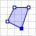

1 Introdu√ß√£o ao postgis üêò
Uma das principais características que diferenciam os bancos de dados geográficos dos demais bancos de dados convencionais, é a presença de uma coluna com a finalidade de armazenar uma propriedade geográfica do registro. Além disso , os bancos de dados geográficos também devem oferecer de forma otimizada suporte à operações espaciais. Diferente de um passado não muito distante, atualmente existem muitas alternativas de bancos de dados geográficos, como: SQL Server Spatial, ESRI ArcSDE, Oracle Spatial, GeoMesa, PostGIS, etc. Cada uma destas opções tem o objetivo em comum trabalhar com dados geográficos e todas estão sendo muito utlizadas em diversos segmentos nos dias de hoje, sendo o PostGIS a mais popular de todas.
O PostGIS é uma extensão geográfica open source para o SGDB (Sistema Gerenciador de Banco de Dados) PostgreSQL, lançada em 2001 inicialmente por uma empresa canadense chamada Refractions Research. O PostGIS segue a padronização estabelecida pelo OGC (Open GIS Consortium), que provê suporte para todos os objetos e funções da especificação SFS (Simple Features for SQL). De forma concisa, a especificação SFS foi criada pelo OGC (consórcio formado por empresas, universidades, etc) e trata das questões de representação da componente espacial e vetorial dos dados geográficos, garantindo assim, a interoperabilidade entre os sistemas os utilizam.
Este capítulo tem como objetivo introduzir ao leitor à extensão espacial PostGIS . Ao final, o leitor deverá está apto a configurar corretamente o ambiente para a utilização da ferramente, carregar arquivos vetoriais e realizar operações espaciais.
1.1 Instalação
Como o PostGIS é uma extensão do PostgreSQL, primeiramente deverá ser feita a instalação do SGBD.
Importante: Não esqueça o nome de usuário e senha que você definir durante a instalação, pois essas informações serão de suma importância, anote se necessário.
A versão do PostgreSQL utilizada aqui é será a 11.5. A instalação do PostgreSQL
e PostGIS no sistema operacional windows, pode ser feita através do instalador
disponível nesse link, para isso fique atento durante a instalação e na
segunda tela do assistente, no item Spatial Extensions marque a opção PostGIS.
A instalação do PostgreSQL e PostGIS no sistema Operacional MacOS pode ser feita
através do gerenciador de pacotes brew, utilizado os seguintes comandos:
brew install postgresbrew install postgisPara a instalação nos sistemas operacionais linux, utilize os seguintes comandos :
sudo apt install postgresql postgresql-contribsudo apt-get install postgisPara verificar se a instalação do PostgreSQL foi realizada corretamente, abra o terminal e digite o seguinte comando:
psql --versionSe tudo ocorreu bem, deverá aparecer uma saída com a versão do PostgreSQL, algo
parecido com psql (PostgreSQL) 11.5.
Para verificar a instalação do PostGIS, abra o terminal e execute o seguinte comando para abrir o interpretador do PostgreSQL:
sudo -u <user> psqlObs: Substitua o trecho
<user>para o usuário do PostgreSQL definido na instalação.
Com o terminal do PostgreSQL aberto, execute o seguinte comando para verificar a versão do PostGIS:
SELECT PostGIS_version();Se tudo estiver certo, deverá aparecer como saída a versão do PostGIS. Para sair
do interpretador psql, basta executar o comando \q. E com isso finalizamos as
configuração iniciais necessárias iniciar os trabalhos com o PostGIS. Para mais
informações, consulte a página oficial do PostGIS em:
https://postgis.net/install.
Na próxima seção iremos criar um banco de dados novo e habilitar nele a extensão espacial PostGIS, para que possam ser executadas as nossas primeiras consultas espaciais.
1.2 Um pouco de SQL
SQL (Structured Query Language) é linguagem padrão de consultas declarativas dos bancos de dados relacionais. Ela foi concebida na década de 1970, como resultado de um estudo feito por Edgar Frank Codd, que na época era funcionário da IBM, e propôs o modelo de banco de dados relacional (Codd 1970) que em sua essência é utilizado até os dias de hoje. Como dito anteriormente, o PostGIS é uma extensão espacial que funciona sobre o SGBD PosgreSQL, que utiliza o modelo de banco de dados relacional. Sendo assim, antes de iniciarmos de fato as consultas espaciais como o PostGIS, iremos executar alguns comandos SQL básicos para preparação do ambiente.
1.2.1 Acessando a interface PostgreSQL
O psql é uma interface padrão que funciona por linha de comando, e permite
interagir rapidamente com o PostgreSQL. Como o foco deste material é a apenas
apresentar alguns recursos do PostGIS, iremos executar as consultas SQL usando o
psql, o que não é muito recomendado se trabalhar com esquemas mais complexos de
bancos de dados, para isso, podem ser utilizado outras interfaces mais
agradávies e eficienes como o pgAdmin.
Para acessar o psql execute o comando abaixo, substituindo o trecho <user>,
pelo nome de usuário postgres que foi definido durante a instalação:
sudo -u <user> psqlAo ser solicitado a senha, digite a senha de administrador do seu sistema
operacional. O psql possui algumas utilitário para o geraciomento do PostgreSQL,
use o comando \l para listar todos os bancos de dados disponíveis, em sua
máquina. Algo parecido com o que mostrado na Figura 1.1
deverá aparecer.

Figure 1.1: Listando todos os banco de dados através do psql.
Normalmente, a instalação padrão do PostgreSQL cria algumas bases de dados. A seguir, iremos utilizar comandos SQL para criar um novo banco de dados e também adicionar a extensão espacial do PostGIS.
1.2.2 Criando uma nova base de dados
A linguagem SQL é organizada em alguns subconjuntos, cada um deles com comando específicos para determinadas tarefas. A Figura 1.2 mostra a os subconjuntos que compõe a linguagem SQL.
Figure 1.2: Listando todos os banco de dados através do psql.
DDL - Data Definition Laguage (Linguagem de Definição de Dados): É o subconjunto de instruções da linguagem SQL responsável por manipular diretamente o esquema do banco de dados e estrura das tabelas.
DML - Data Manipulation Language (Linguagem de Manipulação de Dados): É o subconjunto de instruções da linguagem SQL responsável por interagir diretamente com os dados das tabelas.
DCL - Data Control Language (Linguagem de Controle de Dados): É o subconjunto de instruções da linguagem SQL responsável por administrar a segurança das bases de dados, adicionando ou removendo permissões.
TCL - Transaction Control Language (Linguagem de Controle de Transação): É o subconjunto de instruções da linguagem SQL responsável por gerenciar as transações das consultas SQL.
Neste material, o escopo abordado será apenas alguns comando do subconjunto DDL e DML. Para mais informações a respeito do gerenciamento de banco de dados e a organização da linguagem SQL, recomenda-se a leitura do trabalho de (Kumar, Raheja, and Sachdeva 2012), o qual aborada com mais aprofundamento estes tópicos.
Agora iremos criar um banco de dados para trabalharmos com os recursos espacias do PostGIS, para isso execute o comando a seguir:
O comando acima cria um novo banco de dados chamado dbgeo. Caso queira o criar
um banco de dados com o nome diferente, utilize o mesmo comando substituindo o
trecho dbgeo pelo nome desejado. Após receber a mensagem de confirmação, será
necessário mudar o interpretador psql para o novo banco de dados criado, para
isso utilize o seguinte comando:
Note que o trecho dbgeo é o nome da base de dados que foi criada no passo
anterior. Se tudo estiver ocorrido bem, deverá aparecer a confirmação conforme a
Figura 1.3.
Figure 1.3: Criando e alterando base dados.
Por fim, para habilitarmos a nova base de dados para suportar operações com dados espaciais, iremos adicionar a extensão PostGIS. Para isso, execute o seguinte comando:
Após adicionarmos a extensão PostGIS em nosso banco de dados, vamos criar a nossa primeira tabela com atributos geométricos. Para isso, iremos criar como exemplo uma tabela simples onde será armazenado o modelo de rede de detecção de raios, e sua posição geográfica (latitude/longitude), com isso praticaremos os conceitos da geometria do tipo ponto. Sendo assim, execute o seguinte comando em seu terminal:
CREATE TABLE lightning_network(
id serial PRIMARY KEY,
model VARCHAR(15) NOT NULL,
location GEOMETRY NOT NULL
);Observe que o atributo location da tabela, possui o tipo definido como
GEOMETRY, esse é um dos recursos que o PostGIS, provê ao banco de dados, e tem
como finalidade permitir que seja armazenado nessa coluna objetos geometricos. A
seguir iremos popular nossa tabela, e realizar algumas operações espaciais. Mas
antes disso, será abordado brevemente a linguagem de marcação de texto que
permite a criação objetos vetoriais, o Well-known text (WKT).
1.2.3 Well-known text
O WKT foi originalment proposto pela OGC, e sendo descrita pelo Simple Feature Access (OGC 2011). A forma equivalente do WKT em binário Well-known binary (WKB), também está descrita no SFA, e é como a geomeria é armazenado nas tabelas. A tabela a seguir mostra os os principais tipos geométricos e suas respectivas representações em WKT.
| Tipo | Geometria | WKT |
|---|---|---|
| Ponto |  |
POINT (30 10) |
| Segmento |  |
LINESTRING (30 10, 10 30, 40 40) |
| Polígono |  | POLYGON ((30 10, 40 40, 20 40, 10 20, 30 10)) |
| Multi-Ponto |  |
MULTIPOINT (10 40, 40 30, 20 20, 30 10) |
| Multi-Segmento |  |
MULTILINESTRING ((10 10, 20 20, 10 40), (40 40, 30 30, 40 20, 30 10)) |
| Muli-Polígono |  |
MULTIPOLYGON (((30 20, 45 40, 10 40, 30 20)), ((15 5, 40 10, 10 20, 5 10, 15 5))) |
| Coleção | GEOMETRYCOLLECTION (POINT (40 10), LINESTRING (10 10, 20 20, 10 40), POLYGON ((40 40, 20 45, 45 30, 40 40))) |
Princiapais represetações geométricas em WKT. Adaptado Wikpédia .
Para mais informações a respeito do WKT e WKB, recomenda-se a leitura do manual da Simple Feature.
INSERT INTO lightning_network(model, location)
VALUES('LINET', 'POINT(-23.55 -46.73)');
INSERT INTO lightning_network(model, location)
VALUES('GLD360', 'POINT(-3.01 -60.05)');Observe que para inserir a geolocalização de cada rede de detecção foi utilizada uma síntaxe bem peculiar. Esse formato diz respeito ao WKT (Well-known text), uma linguagem de marcação de texto para trabalhar com objetos geometricas.
sasds